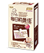
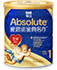
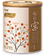

수유솔루션
성장영양솔루션(0~3개월)
성장발달평가
- 진단결과
婴幼儿配方奶粉 > 每日金典名作提高脂肪和钙的双重吸收率、使排便更柔软的OPO结构脂（1,3 二油酸 2 棕榈酸甘油三酯）。DHA、ARA、胆碱的三重强化+ 帮助大脑和眼睛发育的成分叶黄素。根据Codex设计，ω6系列亚油酸 : ω-3系列α-亚麻酸 = 15~10 : 1。
| 월령 |
|---|
| 1개월 미만 |
| 중국소아의 성장 표준치 | |||
|---|---|---|---|
| 남자아이 | 여자아이 | ||
| 키(cm) | 체중(kg) | 키(cm) | 체중(kg) |
| 50.4 | +4.6 | 3 | -0.32 |
| 우리아이(남자) | |||
|---|---|---|---|
| 키(cm) | 비교 | 키(cm) | 비교 |
| 55 | +4.6 | 3 | -0.32 |
- 우리아기 성장발달 (4~5개월)
[4~5개월]
- 목을 제대로 가눌 수 있게 되며, 뒤집는 연습을 하기 시작합니다.
- 천천히 움직이는 물체를 따라 시선을 이동시키고, 장난감을 보면 잡으려고 합니다.
- 미소도 짓고, 소리를 내며 웃거나, 무서우면 울기도 합니다. 낯가림이 조금씩 시작됩니다.
- 먹는 시간과 잠자는 시간이 비교적 규칙적으로 됩니다.
- 변보는 횟수도 많이 줄어듭니다.
- 목을 제대로 가눌 수 있게 되며, 뒤집는 연습을 하기 시작합니다.
- 천천히 움직이는 물체를 따라 시선을 이동시키고, 장난감을 보면 잡으려고 합니다.
- 미소도 짓고, 소리를 내며 웃거나, 무서우면 울기도 합니다. 낯가림이 조금씩 시작됩니다.
- 먹는 시간과 잠자는 시간이 비교적 규칙적으로 됩니다.
- 변보는 횟수도 많이 줄어듭니다.
- 수유법에 따른 맞춤 솔루션
婴幼儿配方奶粉 > 每日金典名作提高脂肪和钙的双重吸收率、使排便更柔软的OPO结构脂（1,3 二油酸 2 棕榈酸甘油三酯）。DHA、ARA、胆碱的三重强化+ 帮助大脑和眼睛发育的成分叶黄素。根据Codex设计，ω6系列亚油酸 : ω-3系列α-亚麻酸 = 15~10 : 1。
- 적절한 분유 수유양 체크
婴幼儿配方奶粉 > 每日金典名作提高脂肪和钙的双重吸收率、使排便更柔软的OPO结构脂（1,3 二油酸 2 棕榈酸甘油三酯）。DHA、ARA、胆碱的三重强化+ 帮助大脑和眼睛发育的成分叶黄素。根据Codex设计，ω6系列亚油酸 : ω-3系列α-亚麻酸 = 15~10 : 1。
- 모유 먹이는 엄마가 섭취해야 할 식품과 주의해야 할 식품
모유를 생성하기 위해서는 비임신기보다 충분한 영양관리가 필요합니다.
특히, 일반 성인 여성에 비해 에너지, 수분, 비타민A, 비타민C, 구리, 아연, 요오드와 셀레늄의 요구량이 커지게 됩니다.
※섭취해야 하는 음식
-에너지를 보충할 수 있는 식품
수유부는 성인여자의 에너지 요구량에서 모유를 생성하는 부분을 고려하여 하루 320kcal가 추가로 요구됩니다.에너지원은 탄수화물, 단백질, 지방을 포함한 식품으로 보충을 할 수 있게 됩니다.보통 수유부에게서 증가하는 열량(320kcal)와 단백질(25g)은 하루에 3~4컵의 우유를 더 섭취하는 것으로 충족될 수 있는 수준입니다.우유를 추가로 섭취하게 되면 칼슘의 보충뿐 아니라 수분섭취를 함께 할 수 있는 장점이 있습니다.
-양질의 단백질 식품의 섭취
수유시에는 질이 좋은 단백질의 요구량이 일반 성인 여성에 비해 증가합니다.
단백질은 육류, 생선류, 난류, 유제품, 콩류에 풍부합니다. 엄마의 식사에서 단백질이 일시적으로 부족한 경우에는, 모유의 단백질 함량에는 영향을 주지 않습니다.다만, 엄마의 단백질 섭취량이 장기적으로 부족할 때에는 모유의 단백질 함량이 낮아지거나 특정 단백질이 부족하게 됩니다.
-충분한 비타민 섭취
수유를 하는 기간 동안의 비타민 함량은 수유기간에 따라 달라지는데, 대체로 초유에 높고 성숙유로 갈수록 감소합니다.
수유 기간 동안 특히 중요한 비타민은 A,B,C,D,E,엽산 등으로, 특히 비타민A와 C, 엽산이 풍부한 음식을 섭취해야 합니다.엄마의 몸에서 비타민A가 부족하게 되면 모유의 비타민 함량이 저하됩니다.비타민A가 풍부한 식품은 간, 생선, 계란 및 당근과 시금치 같은 녹황색 채소와 해조류에 많이 함유되어 있습니다. 비타민C는 과일, 채소 등에 많이 함유되어 있고, 모유의 비타민C의 함량은 매우 풍부하기 때문에, 이를 보충하기 위해서는 엄마가 식사를 통해 비타민C를 통해 충분히 보충해 주어야 합니다.
엽산은 임신기부터 철분과 함께 중요한 영양소입니다. 임신기간 중에 체내의 엽산 저장량이 고갈되게 되기 때문에 수유기간 동안의 엽산의 보충이 매우 중요합니다.엽산이 부족하게 되면 빈혈이 발생하고, 위장점막에 영향을 주어 위장 장애가 나타나기도 합니다.엽산이 풍부한 음식은 콩류, 계란, 해조류와 시금치 등의 녹색 채소류입니다.
-칼슘 섭취
모유의 칼슘 조성이 산모의 칼슘 섭취량에 의해 영향을 받는다는 증거는 없으나 식사에서 조성되는 칼슘이 결핍되면 모유의 칼슘 수준을 유지하기 위하여 수유부의 뼈에 있는 칼슘을 사용하게 됩니다.그러므로 칼슘을 충분히 섭취하지 않으면서 장기간 모유 수유를 했던 산모는 골연화증이나 테타니 증세가 나타났다는 보고가 있습니다.골절이나 외상을 증가시킬 수 있습니다.
-수분 섭취
수유부는 갈증을 많이 느끼게 되므로 자연 수분을 많이 섭취하게 됩니다. 하루 평균 650~710ml의 모유를 분비하게 되기 때문에, 영양섭취기준에서는 수분의 추가 필요량을 700ml정도로 보고 있습니다.우유나 과일주스 등으로 충분한 수분을 섭취해줍니다.
-영양제
수유부에게는 거의 모든 영양소의 필요량이 증가하지만 균형 잡힌 식사를 통해 대체적으로 만족될 수 있습니다. 그러나 칼슘,철분,엽산 등과 같이 특별히 부족한 영양소가 있다면 영양보충식품이나 영양제의 도움을 받기도 합니다.
특히, 일반 성인 여성에 비해 에너지, 수분, 비타민A, 비타민C, 구리, 아연, 요오드와 셀레늄의 요구량이 커지게 됩니다.
※섭취해야 하는 음식
-에너지를 보충할 수 있는 식품
수유부는 성인여자의 에너지 요구량에서 모유를 생성하는 부분을 고려하여 하루 320kcal가 추가로 요구됩니다.에너지원은 탄수화물, 단백질, 지방을 포함한 식품으로 보충을 할 수 있게 됩니다.보통 수유부에게서 증가하는 열량(320kcal)와 단백질(25g)은 하루에 3~4컵의 우유를 더 섭취하는 것으로 충족될 수 있는 수준입니다.우유를 추가로 섭취하게 되면 칼슘의 보충뿐 아니라 수분섭취를 함께 할 수 있는 장점이 있습니다.
-양질의 단백질 식품의 섭취
수유시에는 질이 좋은 단백질의 요구량이 일반 성인 여성에 비해 증가합니다.
단백질은 육류, 생선류, 난류, 유제품, 콩류에 풍부합니다. 엄마의 식사에서 단백질이 일시적으로 부족한 경우에는, 모유의 단백질 함량에는 영향을 주지 않습니다.다만, 엄마의 단백질 섭취량이 장기적으로 부족할 때에는 모유의 단백질 함량이 낮아지거나 특정 단백질이 부족하게 됩니다.
-충분한 비타민 섭취
수유를 하는 기간 동안의 비타민 함량은 수유기간에 따라 달라지는데, 대체로 초유에 높고 성숙유로 갈수록 감소합니다.
수유 기간 동안 특히 중요한 비타민은 A,B,C,D,E,엽산 등으로, 특히 비타민A와 C, 엽산이 풍부한 음식을 섭취해야 합니다.엄마의 몸에서 비타민A가 부족하게 되면 모유의 비타민 함량이 저하됩니다.비타민A가 풍부한 식품은 간, 생선, 계란 및 당근과 시금치 같은 녹황색 채소와 해조류에 많이 함유되어 있습니다. 비타민C는 과일, 채소 등에 많이 함유되어 있고, 모유의 비타민C의 함량은 매우 풍부하기 때문에, 이를 보충하기 위해서는 엄마가 식사를 통해 비타민C를 통해 충분히 보충해 주어야 합니다.
엽산은 임신기부터 철분과 함께 중요한 영양소입니다. 임신기간 중에 체내의 엽산 저장량이 고갈되게 되기 때문에 수유기간 동안의 엽산의 보충이 매우 중요합니다.엽산이 부족하게 되면 빈혈이 발생하고, 위장점막에 영향을 주어 위장 장애가 나타나기도 합니다.엽산이 풍부한 음식은 콩류, 계란, 해조류와 시금치 등의 녹색 채소류입니다.
-칼슘 섭취
모유의 칼슘 조성이 산모의 칼슘 섭취량에 의해 영향을 받는다는 증거는 없으나 식사에서 조성되는 칼슘이 결핍되면 모유의 칼슘 수준을 유지하기 위하여 수유부의 뼈에 있는 칼슘을 사용하게 됩니다.그러므로 칼슘을 충분히 섭취하지 않으면서 장기간 모유 수유를 했던 산모는 골연화증이나 테타니 증세가 나타났다는 보고가 있습니다.골절이나 외상을 증가시킬 수 있습니다.
-수분 섭취
수유부는 갈증을 많이 느끼게 되므로 자연 수분을 많이 섭취하게 됩니다. 하루 평균 650~710ml의 모유를 분비하게 되기 때문에, 영양섭취기준에서는 수분의 추가 필요량을 700ml정도로 보고 있습니다.우유나 과일주스 등으로 충분한 수분을 섭취해줍니다.
-영양제
수유부에게는 거의 모든 영양소의 필요량이 증가하지만 균형 잡힌 식사를 통해 대체적으로 만족될 수 있습니다. 그러나 칼슘,철분,엽산 등과 같이 특별히 부족한 영양소가 있다면 영양보충식품이나 영양제의 도움을 받기도 합니다.
- 모유를 잘 나오게 하려면?
모유 생성량은 수유시기에 따라서 차이가 납니다.
분만후 2~3일경 분비되는 초유는 하루 생성량이 50ml정도이고, 분만 후 5일경에는 약 500ml로 증가하며, 한 달 경에는 약 750ml로 증가합니다.
대부분의 여성은 한 명의 영아가 요구하는 충분한 양의 모유를 생성 할 수 있습니다.
아기에게 젖을 계속해서 빨리는 한 모유는 계속 분비되지만, 12개월 이후에는 모유 생성량이 줄어들게 됩니다.
▶편안한 마음으로 수유하세요.
아기가 젖을 빨게 되면, 이 자극이 뇌하수체 후엽에서 옥시토신이라는 호르몬을 자극하게 됩니다.
옥시토신이라는 호르몬은 만들어진 모유가 뿜어지게 만드는 역할을 합니다 (모유 사출 반사, milk ejection reflex, let-down reflex). 이 호르몬은 엄마의 정서적 상태에 크게 영향을 받습니다. 따라서 수유하는 엄마가 스트레스를 받거나, 불안한 상태에서는 이 호르몬이 제대로 분비되지 못합니다.
반면에 아기의 울음소리를 듣거나 아기의 시선, 아기냄새 등은 이 호르몬을 촉진하는 역할을 합니다. 모유 사출 반사가 일어나면 수유 중에 반대쪽 유방에서도 모유가 분수처럼 뿜어져 나오게 됩니다. 따라서, 모유가 잘 분비되기 위해서는 편안한 마음가짐과 아기에 대한 사랑을 충분히 느끼고, 관심을 갖는 것이 중요합니다.
▶자주 젖을 물려주세요.
뇌하수체에서 분비되는 호르몬인 프로락틴(prolactin)은 유방의 선세포에서 젖을 분비하도록 만듭니다.
프로락틴은 아기가 젖을 빨기 시작하고 나면 작동되고, 다음 모유 수유 때 먹일 젖을 만들게 합니다.
뇌하수체는 낮보다 밤에 더 많은 프로락틴을 분비하기 때문에 특히 밤에 젖을 먹이면 보다 많은 젖을 먹일 수 있습니다. 유방은 아기가 필요한 만큼의 젖을 공급하게 되어있습니다. 따라서 아기가 젖을 빨면 빨수록 유방은 더 많은 젖을 만들어 냅니다. 아이가 젖을 덜 빨면 생산되는 젖의 양은 적어지기 시작합니다. 엄마가 젖의 양을 늘리기 원한다면 가장 좋은 방법은 아기가 더 오래 또 더 자주 빨도록 하는 것입니다. 보통 사람들이 생각하기로는 젖을 양을 늘리기 위해서는 젖을 자주 먹이지 않고 축적해야 한다고 생각할 수도 있으나 이는 잘못된 생각입니다. 젖을 축적할 목적으로 젖먹이는 것을 건너 뛰게 되면 젖의 양이 줄어들게 됩니다.
수유시에는 한쪽 젖을 모두 비우고, 아기가 먹다 잠이 드는 경우에는 남아 있는 젖을 짜내어 주는 것이 모유량을 늘이는데 도움이 됩니다.
▶출산 전 후 영양을 골고루~
임신기간 중에 엄마의 영양불량이 심한 경우에는 유선의 발달과 성숙이 제한을 받게 됩니다.
수유기간 중에는 모체의 대사가 모유생성에 우선순위를 두고 있기 때문에 모체의 영양상태에 따라 모유의 생성량과 조성이 크게 변하지는 않으나, 영양불량이 심할 때에는 모유의 생성량이 줄어들 수 있습니다. 또한, 모유생성을 인해 엄마의 영양이 고갈될 우려가 있기 때문에 골다공증 예방 등을 위해서라도 충분한 영양섭취가 중요합니다.
특히, 모유수유 기간 동안에는 수분과 단백질이 풍부한 식사와 미량 영양소인 칼슘,철분,비타민의 섭취를 추가해주는 것이 좋습니다.
분만후 2~3일경 분비되는 초유는 하루 생성량이 50ml정도이고, 분만 후 5일경에는 약 500ml로 증가하며, 한 달 경에는 약 750ml로 증가합니다.
대부분의 여성은 한 명의 영아가 요구하는 충분한 양의 모유를 생성 할 수 있습니다.
아기에게 젖을 계속해서 빨리는 한 모유는 계속 분비되지만, 12개월 이후에는 모유 생성량이 줄어들게 됩니다.
▶편안한 마음으로 수유하세요.
아기가 젖을 빨게 되면, 이 자극이 뇌하수체 후엽에서 옥시토신이라는 호르몬을 자극하게 됩니다.
옥시토신이라는 호르몬은 만들어진 모유가 뿜어지게 만드는 역할을 합니다 (모유 사출 반사, milk ejection reflex, let-down reflex). 이 호르몬은 엄마의 정서적 상태에 크게 영향을 받습니다. 따라서 수유하는 엄마가 스트레스를 받거나, 불안한 상태에서는 이 호르몬이 제대로 분비되지 못합니다.
반면에 아기의 울음소리를 듣거나 아기의 시선, 아기냄새 등은 이 호르몬을 촉진하는 역할을 합니다. 모유 사출 반사가 일어나면 수유 중에 반대쪽 유방에서도 모유가 분수처럼 뿜어져 나오게 됩니다. 따라서, 모유가 잘 분비되기 위해서는 편안한 마음가짐과 아기에 대한 사랑을 충분히 느끼고, 관심을 갖는 것이 중요합니다.
▶자주 젖을 물려주세요.
뇌하수체에서 분비되는 호르몬인 프로락틴(prolactin)은 유방의 선세포에서 젖을 분비하도록 만듭니다.
프로락틴은 아기가 젖을 빨기 시작하고 나면 작동되고, 다음 모유 수유 때 먹일 젖을 만들게 합니다.
뇌하수체는 낮보다 밤에 더 많은 프로락틴을 분비하기 때문에 특히 밤에 젖을 먹이면 보다 많은 젖을 먹일 수 있습니다. 유방은 아기가 필요한 만큼의 젖을 공급하게 되어있습니다. 따라서 아기가 젖을 빨면 빨수록 유방은 더 많은 젖을 만들어 냅니다. 아이가 젖을 덜 빨면 생산되는 젖의 양은 적어지기 시작합니다. 엄마가 젖의 양을 늘리기 원한다면 가장 좋은 방법은 아기가 더 오래 또 더 자주 빨도록 하는 것입니다. 보통 사람들이 생각하기로는 젖을 양을 늘리기 위해서는 젖을 자주 먹이지 않고 축적해야 한다고 생각할 수도 있으나 이는 잘못된 생각입니다. 젖을 축적할 목적으로 젖먹이는 것을 건너 뛰게 되면 젖의 양이 줄어들게 됩니다.
수유시에는 한쪽 젖을 모두 비우고, 아기가 먹다 잠이 드는 경우에는 남아 있는 젖을 짜내어 주는 것이 모유량을 늘이는데 도움이 됩니다.
▶출산 전 후 영양을 골고루~
임신기간 중에 엄마의 영양불량이 심한 경우에는 유선의 발달과 성숙이 제한을 받게 됩니다.
수유기간 중에는 모체의 대사가 모유생성에 우선순위를 두고 있기 때문에 모체의 영양상태에 따라 모유의 생성량과 조성이 크게 변하지는 않으나, 영양불량이 심할 때에는 모유의 생성량이 줄어들 수 있습니다. 또한, 모유생성을 인해 엄마의 영양이 고갈될 우려가 있기 때문에 골다공증 예방 등을 위해서라도 충분한 영양섭취가 중요합니다.
특히, 모유수유 기간 동안에는 수분과 단백질이 풍부한 식사와 미량 영양소인 칼슘,철분,비타민의 섭취를 추가해주는 것이 좋습니다.
- 분유는 얼만큼 먹어야 하나요?
| 월령(개월) | 1회 수유량(ml) | 1일 횟수 | 총수유량(ml) |
|---|---|---|---|
| 0~2주 | 80 | 7~8 | 560~640 |
| 2주~1개월 | 120 | 6~7 | 720~840 |
| 1개월~2개월 | 140 | 6~7 | 840~980 |
| 2개월~3개월 | 180 | 5~6 | 900~1000 |
| 3개월~6개월 | 200 | 4~5 | 800~1000 |
| 6개월~8개월 | 200 | 4~5 | 800~1000 |
| 9개월~첫돌 | 250 | 3~4 | 700~1000 |
| 첫돌이후 | 250 | 2~3 | 500~600 |
- 추천제품
| 제품명 | 제품설명 | |
|---|---|---|
| 원천지아(맘스마일) |  | 专为从准备怀孕到哺乳期的妈妈研制的营养配方奶粉 > 每日韵晨佳 为孕产妇的营养需求科学设计的全面营养-铁、叶酸、钙、维生素C、维生素E。 特别采用活性动物双歧杆菌Bb-12，提高母乳营养。 富含维持妈妈肠道健康，不容易便秘的可溶性膳食纤维。 特别添加有助宝宝头脑及视觉发育的DHA、胆碱。 独立小袋包装，携带方便，随时随地随意补充营养。 |
| 매일 금전명작 |  | 婴幼儿配方奶粉 > 每日金典名作 提高脂肪和钙的双重吸收率、使排便更柔软的OPO结构脂（1,3 - 二油酸 2 - 棕榈酸甘油三酯）。 更易消化吸收的蛋白质-水解乳清蛋白、α-乳清蛋白。 稳定宝宝情绪所需的氨基酸-色氨酸。 DHA : ARA = 适合东方宝宝理想的1 : 1。 增强保护力的5种核苷酸、牛磺酸、锌, 益于肠道健康的FOS、GOS。 |
| 매일 궁 |  | 婴幼儿配方奶粉 > 每日宫 活性动物双歧杆菌Bb-12（出厂时活菌数不低于≥1X108CFU/100g）+ 有益菌增殖因子FOS + GOS → Synbiotics系统。 增强保护力的5种核苷酸、牛磺酸。 DHA、ARA、胆碱的三重强化+ 帮助大脑和眼睛发育的成分叶黄素。 根据Codex设计，ω- 6系列亚油酸 : ω-3系列α-亚麻酸 = 15~10 : 1。 提高脂肪和钙的双重吸收率、使排便更柔软的OPO结构脂（1,3 - 二油酸 2 - 棕榈酸甘油三酯）。 更易消化吸收的蛋白质- 水解乳清蛋白、α-乳清蛋白。 |
- 이유식 시기 평가
婴幼儿配方奶粉 > 每日金典名作提高脂肪和钙的双重吸收率、使排便更柔软的OPO结构脂（1,3 二油酸 2 棕榈酸甘油三酯）。DHA、ARA、胆碱的三重强化+ 帮助大脑和眼睛发育的成分叶黄素。根据Codex设计，ω6系列亚油酸 : ω-3系列α-亚麻酸 = 15~10 : 1。
- 이유식 초기
처음 이유식을 시작할 때 쌀미음을 먼저 먹일까 과즙을 먼저 먹일까 고민하는 분들이 많습니다. 쌀미음은 끓이는 방법도 모르고 맛도 없을 것 같아 과즙을 제일 먼저 먹이시는 경우도 많습니다. 그러나 대부분의 전문가들이 쌀미음을 먼저 먹일 것을 권장하고 있습니다. 단맛이 적고 알레르기 유발 위험도도 낮기 때문입니다. 또한 앞으로 아기가 주식 삼아 평생 먹어야 할 식품이기 때문이기도 합니다
▶ 쌀미음 먹이기
맨 처음 먹이실 때는 아주 묽은 미음을 끓여 국물만 받혀 먹이세요. 처음부터 너무 되직하게 먹이면 소화도 어려울 수 있고 간혹 토할 수 있습니다.
-쌀미음 끓이는 방법
1.쌀을 씻어 불리고, 2Ts정도를 냄비에 넣는다.
2.물을 넣고, 약한불에서 1시간 정도 푹 끓인다.
3.쌀알을 으깨지 말고 체애 받히고, 맑은 국물만 떠먹인다.
처음에는 아기 스픈으로 2~3숟가락 정도만 먹여보시고 일주일에 걸쳐 하루 1~2숟가락씩 양을 늘려가면서 먹여보세요. 아기가 잘 적응하는 것 같으면 쌀알도 함께 으깨어 채에 받혀서 먹이도록 하고 아기의 적응도를 살피면서 서서히 물의 양을 줄여 되직하게 만들어 먹이세요.
만약 1시간에 걸쳐 미음을 끓일 시간이 없으시다면 집에 있는 밥을 이용하여 간편하게 끓이시는 방법도 있습니다. 밥에 3배 정도의 물을 부은 후 20분 정도 푹 끓입니다. 쌀알이 거의 형태가 없어질 때까지 끓이신 후 미음과 마찬가지로 채에 받혀 먹이시면 됩니다. 한꺼번에 1주일분 정도의 미음을 만들어 얼음 얼리는 용기에 얼려두셨다가 몇 조각씩 꺼내어 녹여 푹 끓여 먹이시는 방법도 있고, 쌀로만 이루어진 분말타입 쌀 이유식으로 물만 부어 바로 떠 먹이는 방법도 있습니다
▶ 타락미음 먹이기
쌀미음 먹이기가 성공적으로 끝나셨다면 다음에는 타락미음을 시도해 보세요. 아기가 먹고 있는 분유나 모유를 이용해 끓인 미음이므로 고소하면서도 아기가 거부감 없이 먹을 수 있습니다.
-타락미음 끓이는 방법
1.쌀2Ts정도에 물 1C을 부어 쌀알이 투명해질 때까지 불린다.
2.여기에 분유탄 물이나 모유를 추가로 붓는다.
3.쌀알이 형태가 없어질 때까지 푹 끓인다.
4.채에 받히거나 믹서에 갈아 먹인다.
▶ 곡류 미음 먹이기
쌀미음, 타락미음 다음으로 먹여보실 수 있는 것이 감자나 고구마, 밤과 같이 쌀과 비슷한 성질을 가진 곡류로 끓인 미음입니다. 쌀에 비해 단맛이 있고 특유의 풍미가 있으면서도 쌀과 마찬가지로 알레르기로부터 안전해 아기에게 이유식으로 먹이기에 아주 적합한 식품들입니다. 쌀과 함께 끓여 먹이기도 하고 그것만 삶아 으깨서 물이나 분유물을 섞어 묽게 만들어 먹이기도 합니다.
-밤암죽 끓이기
1.쌀 2Ts을 씻어 물에 불려둔다.
2.밤은 삶아서 속을 파내 곱게 으깨둔다.
3.쌀에 물을 부어 푹 끓인 다음 채에 받힌다.
4.채에 받힌 죽에 으깬 밤을 섞어 살짝 한번 더 끓여준다.
(*) 감자미음, 고구마 미음도 이와 방법으로 끓이시면 됩니다.
위에서 알려드린 미음의 농도는 아기에게 여러 번 먹여보면서 엄마가 결정하면 됩니다. 간혹 어떤 농도로 먹여야 하는지를 궁금해 하시는 분들이 계신데 처음에 먹이는 미음은 영양 보충의 면보다는 아기가 이유식에 적응 하는 것이 더 중요하므로 아기가 잘 먹고 좋아하는 농도로 끓여 주시면 됩니다.
미음을 끓여 먹인다고 하면 너무 어렵게만 생각하시는 분들이 많습니다. 그러나 한번 직접 끓여보면 이렇게 쉽구나 하는 생각을 하시게 될 겁니다.
▶ 쌀미음 먹이기
맨 처음 먹이실 때는 아주 묽은 미음을 끓여 국물만 받혀 먹이세요. 처음부터 너무 되직하게 먹이면 소화도 어려울 수 있고 간혹 토할 수 있습니다.
-쌀미음 끓이는 방법
1.쌀을 씻어 불리고, 2Ts정도를 냄비에 넣는다.
2.물을 넣고, 약한불에서 1시간 정도 푹 끓인다.
3.쌀알을 으깨지 말고 체애 받히고, 맑은 국물만 떠먹인다.
처음에는 아기 스픈으로 2~3숟가락 정도만 먹여보시고 일주일에 걸쳐 하루 1~2숟가락씩 양을 늘려가면서 먹여보세요. 아기가 잘 적응하는 것 같으면 쌀알도 함께 으깨어 채에 받혀서 먹이도록 하고 아기의 적응도를 살피면서 서서히 물의 양을 줄여 되직하게 만들어 먹이세요.
만약 1시간에 걸쳐 미음을 끓일 시간이 없으시다면 집에 있는 밥을 이용하여 간편하게 끓이시는 방법도 있습니다. 밥에 3배 정도의 물을 부은 후 20분 정도 푹 끓입니다. 쌀알이 거의 형태가 없어질 때까지 끓이신 후 미음과 마찬가지로 채에 받혀 먹이시면 됩니다. 한꺼번에 1주일분 정도의 미음을 만들어 얼음 얼리는 용기에 얼려두셨다가 몇 조각씩 꺼내어 녹여 푹 끓여 먹이시는 방법도 있고, 쌀로만 이루어진 분말타입 쌀 이유식으로 물만 부어 바로 떠 먹이는 방법도 있습니다
▶ 타락미음 먹이기
쌀미음 먹이기가 성공적으로 끝나셨다면 다음에는 타락미음을 시도해 보세요. 아기가 먹고 있는 분유나 모유를 이용해 끓인 미음이므로 고소하면서도 아기가 거부감 없이 먹을 수 있습니다.
-타락미음 끓이는 방법
1.쌀2Ts정도에 물 1C을 부어 쌀알이 투명해질 때까지 불린다.
2.여기에 분유탄 물이나 모유를 추가로 붓는다.
3.쌀알이 형태가 없어질 때까지 푹 끓인다.
4.채에 받히거나 믹서에 갈아 먹인다.
▶ 곡류 미음 먹이기
쌀미음, 타락미음 다음으로 먹여보실 수 있는 것이 감자나 고구마, 밤과 같이 쌀과 비슷한 성질을 가진 곡류로 끓인 미음입니다. 쌀에 비해 단맛이 있고 특유의 풍미가 있으면서도 쌀과 마찬가지로 알레르기로부터 안전해 아기에게 이유식으로 먹이기에 아주 적합한 식품들입니다. 쌀과 함께 끓여 먹이기도 하고 그것만 삶아 으깨서 물이나 분유물을 섞어 묽게 만들어 먹이기도 합니다.
-밤암죽 끓이기
1.쌀 2Ts을 씻어 물에 불려둔다.
2.밤은 삶아서 속을 파내 곱게 으깨둔다.
3.쌀에 물을 부어 푹 끓인 다음 채에 받힌다.
4.채에 받힌 죽에 으깬 밤을 섞어 살짝 한번 더 끓여준다.
(*) 감자미음, 고구마 미음도 이와 방법으로 끓이시면 됩니다.
위에서 알려드린 미음의 농도는 아기에게 여러 번 먹여보면서 엄마가 결정하면 됩니다. 간혹 어떤 농도로 먹여야 하는지를 궁금해 하시는 분들이 계신데 처음에 먹이는 미음은 영양 보충의 면보다는 아기가 이유식에 적응 하는 것이 더 중요하므로 아기가 잘 먹고 좋아하는 농도로 끓여 주시면 됩니다.
미음을 끓여 먹인다고 하면 너무 어렵게만 생각하시는 분들이 많습니다. 그러나 한번 직접 끓여보면 이렇게 쉽구나 하는 생각을 하시게 될 겁니다.
- 아토피 아가의 이유식 먹이기
아토피란 알레르기성 체질을 가지고 있는 개인에게서 피부, 호흡기 점막, 안점막, 장점막 등에 나타나는 일련의 알레르기 증상을 말합니다.
이중 아토피성 피부염은 알레르기 체질을 가진 사람에게서 나타나는 대표적인 피부 질환입니다.
아토피(atopy)라는 말에 비정상적인 반응, 기묘한, 뜻을 알 수 없는 등의 의미가 포함되어 있다는 것에서 알 수 있듯이 아토피성 피부염(atopic dermatitis)은 원인이 복잡하게 뒤엉켜 발병하고 완화와 재발을 반복합니다.
아토피성 피부염의 원인은 잘 알려져 있지 않으나 유전적 소인, 세균, 바이러스, 곰팡이 등에 의한 감염, 식이적 요인, 환경적 요인 등이 관련이 있는 것으로 알려져 있으며, 특히 생후 1년 이내에 생긴 아토피성 피부염은 음식물이 원인이 되는 경우가 많습니다.
▶모유 수유가 최우선
유아기에는 우유 단백질에 대한 알레르기가 가장 흔하고 그 다음으로는 대두에 의한 알레르기가 흔합니다.
모유에는 우유나 두유와는 다르게 알레르기를 일으키는 항원 물질이 없을 뿐만 아니라 면역글로블린인 IgA가 포함되어 있어 알레르기를 일으키는 원인물질이 체내로 들어와도 알레르기 발생을 막아 줄 수 있습니다. 따라서 아기에게 태열이 있거나 부모가 아토피 피부염을 앓은 경력이 있다면 분유보다는 모유 수유를 하는 것이 좋습니다.
만약 모유 수유가 불가능하다면 의사의 처방하에 우유 단백질을 가수분해한 분유를 먹이시는 것이 좋습니다.
▶이유식은 시작은 4~6개월부터
과거에는 이유식 시작시기를 일반 아이들보다 천천히 시작하라는(6개월이후) 권고가 일반화 되었지만, 최근의 지침은 조금 다릅니다. 6개월 이후에 시작하더라도 알레르기 예방효과가 있다는 근거가 약할 뿐 아니라, 낯가림이 시작되는 시기인 6개월에 시작하면 오히려 이유식 적응을 더디게 할 수 있기 때문입니다.
보통 아기들과 마찬가지로 4~6개월에 시작하도록 합니다. 숟가락의 음식을 받아 먹는 연습만 충분히 시켜 놓으신다면 6개월 이후에 이유식을 시작하셔도 다른 아기들을 충분히 따라 잡을 수 있습니다.
▶식품의 선택은 신중하게
소아에게서 가장 흔하게 알레르기를 일으키는 식품은 우유, 콩, 계란, 등푸른 생선, 견과류, 해산물, 밀가루, 오렌지, 귤, 토마토 등 입니다.
뿐만 아니라 우유나 계란, 밀가루가 재료로 사용되는 아이스크림, 요쿠르트, 크림스프, 치즈, 케이크나 빵, 과자, 마요네즈, 국수 등도 함께 주의하셔야 합니다.
식품의 선택은 신중하게 하되, 무턱대고 모든 식품을 제한하실 필요는 없습니다.
오히려 아토피 아기들에게 심각하게 식품을 제한 하는 경우에, 신체발육이 안되거나 영양불량으로 아토피를 더욱 악화시키는 경우도 발생합니다. 조심스럽게 시작하되, 먹여보고 이상이 없는 식품은 먹이셔야 합니다.
6개월 이후에는 단백질이 풍부하면서 알레르기가 적은 쇠고기를 시도하거나, 알레르기가 잘 발생되는 등푸른 생선 대신에 흰 살 생선을 이용하기, 우유 대신에 요구르트나 치즈를 8개월 이후에 먹여 볼 수 도 있습니다. 단, 한번 먹어서 알레르기 반응을 보인 식품은 돌 이후로 미루는 것이 좋습니다.
▶이유식의 시작과 진행
이유 초기에는 알레르기를 일으키지 않는 쌀, 감자, 고구마와 같은 곡류를 위주로 이유식을 준비하시고 그 후 야채, 과일, 육류의 순으로 식품을 시도해 보시는 것이 좋습니다. 새로운 식품을 줄 때는 한 가지씩, 일주일에 2회 정도 시도하는 것이 바람직합니다.
새로운 식품을 먹이셨을 때는 더욱 주의 깊게 관찰하고 어떤 식품을 먹였을 때 알레르기 증상이 나타나면 그 식품은 당분간 주지 않도록 합니다.
아토피 아가의 이유식은 단순하게 1~2가지 정도의 식품만으로 만들어 주시는 것이 좋습니다.
너무 많은 종류의 식품을 섞어 이유식을 만들어 먹였을 경우에는 아기가 어떤 음식에 알레르기 반응을 일으키는지 알 수 없기 때문이지요.
▶처음에는 이유식 일기를 작성
돌 이전까지는 이유식을 먹이시면서 이유식 일기를 작성하시는 것이 도움이 됩니다.
어떤 식품을 먹였고 아기의 피부, 기분, 변 상태 등이 어떠했는지를 기록해 놓으시면 후에 아기가 알레르기 반응을 일으켰을 때 무엇이 문제였는지를 쉽게 확인하실 수 있습니다.
아토피성 피부염은 식사의 조절과 함께 정서의 안정도 매우 중요하다고 합니다.
아기의 증상에 대해 걱정하고 조바심내기 보다는 아기의 참을 수 없는 불편함을 이해하는 따뜻한 말 한마디가 아기의 증상을 많이 완화 시킬 수 있다고 합니다.
힘들어 하기 이전에 부드럽고 편안한 분위기를 만들어 주도록 노력해보세요.
이중 아토피성 피부염은 알레르기 체질을 가진 사람에게서 나타나는 대표적인 피부 질환입니다.
아토피(atopy)라는 말에 비정상적인 반응, 기묘한, 뜻을 알 수 없는 등의 의미가 포함되어 있다는 것에서 알 수 있듯이 아토피성 피부염(atopic dermatitis)은 원인이 복잡하게 뒤엉켜 발병하고 완화와 재발을 반복합니다.
아토피성 피부염의 원인은 잘 알려져 있지 않으나 유전적 소인, 세균, 바이러스, 곰팡이 등에 의한 감염, 식이적 요인, 환경적 요인 등이 관련이 있는 것으로 알려져 있으며, 특히 생후 1년 이내에 생긴 아토피성 피부염은 음식물이 원인이 되는 경우가 많습니다.
▶모유 수유가 최우선
유아기에는 우유 단백질에 대한 알레르기가 가장 흔하고 그 다음으로는 대두에 의한 알레르기가 흔합니다.
모유에는 우유나 두유와는 다르게 알레르기를 일으키는 항원 물질이 없을 뿐만 아니라 면역글로블린인 IgA가 포함되어 있어 알레르기를 일으키는 원인물질이 체내로 들어와도 알레르기 발생을 막아 줄 수 있습니다. 따라서 아기에게 태열이 있거나 부모가 아토피 피부염을 앓은 경력이 있다면 분유보다는 모유 수유를 하는 것이 좋습니다.
만약 모유 수유가 불가능하다면 의사의 처방하에 우유 단백질을 가수분해한 분유를 먹이시는 것이 좋습니다.
▶이유식은 시작은 4~6개월부터
과거에는 이유식 시작시기를 일반 아이들보다 천천히 시작하라는(6개월이후) 권고가 일반화 되었지만, 최근의 지침은 조금 다릅니다. 6개월 이후에 시작하더라도 알레르기 예방효과가 있다는 근거가 약할 뿐 아니라, 낯가림이 시작되는 시기인 6개월에 시작하면 오히려 이유식 적응을 더디게 할 수 있기 때문입니다.
보통 아기들과 마찬가지로 4~6개월에 시작하도록 합니다. 숟가락의 음식을 받아 먹는 연습만 충분히 시켜 놓으신다면 6개월 이후에 이유식을 시작하셔도 다른 아기들을 충분히 따라 잡을 수 있습니다.
▶식품의 선택은 신중하게
소아에게서 가장 흔하게 알레르기를 일으키는 식품은 우유, 콩, 계란, 등푸른 생선, 견과류, 해산물, 밀가루, 오렌지, 귤, 토마토 등 입니다.
뿐만 아니라 우유나 계란, 밀가루가 재료로 사용되는 아이스크림, 요쿠르트, 크림스프, 치즈, 케이크나 빵, 과자, 마요네즈, 국수 등도 함께 주의하셔야 합니다.
식품의 선택은 신중하게 하되, 무턱대고 모든 식품을 제한하실 필요는 없습니다.
오히려 아토피 아기들에게 심각하게 식품을 제한 하는 경우에, 신체발육이 안되거나 영양불량으로 아토피를 더욱 악화시키는 경우도 발생합니다. 조심스럽게 시작하되, 먹여보고 이상이 없는 식품은 먹이셔야 합니다.
6개월 이후에는 단백질이 풍부하면서 알레르기가 적은 쇠고기를 시도하거나, 알레르기가 잘 발생되는 등푸른 생선 대신에 흰 살 생선을 이용하기, 우유 대신에 요구르트나 치즈를 8개월 이후에 먹여 볼 수 도 있습니다. 단, 한번 먹어서 알레르기 반응을 보인 식품은 돌 이후로 미루는 것이 좋습니다.
▶이유식의 시작과 진행
이유 초기에는 알레르기를 일으키지 않는 쌀, 감자, 고구마와 같은 곡류를 위주로 이유식을 준비하시고 그 후 야채, 과일, 육류의 순으로 식품을 시도해 보시는 것이 좋습니다. 새로운 식품을 줄 때는 한 가지씩, 일주일에 2회 정도 시도하는 것이 바람직합니다.
새로운 식품을 먹이셨을 때는 더욱 주의 깊게 관찰하고 어떤 식품을 먹였을 때 알레르기 증상이 나타나면 그 식품은 당분간 주지 않도록 합니다.
아토피 아가의 이유식은 단순하게 1~2가지 정도의 식품만으로 만들어 주시는 것이 좋습니다.
너무 많은 종류의 식품을 섞어 이유식을 만들어 먹였을 경우에는 아기가 어떤 음식에 알레르기 반응을 일으키는지 알 수 없기 때문이지요.
▶처음에는 이유식 일기를 작성
돌 이전까지는 이유식을 먹이시면서 이유식 일기를 작성하시는 것이 도움이 됩니다.
어떤 식품을 먹였고 아기의 피부, 기분, 변 상태 등이 어떠했는지를 기록해 놓으시면 후에 아기가 알레르기 반응을 일으켰을 때 무엇이 문제였는지를 쉽게 확인하실 수 있습니다.
아토피성 피부염은 식사의 조절과 함께 정서의 안정도 매우 중요하다고 합니다.
아기의 증상에 대해 걱정하고 조바심내기 보다는 아기의 참을 수 없는 불편함을 이해하는 따뜻한 말 한마디가 아기의 증상을 많이 완화 시킬 수 있다고 합니다.
힘들어 하기 이전에 부드럽고 편안한 분위기를 만들어 주도록 노력해보세요.
- 신생아 트러블
婴幼儿配方奶粉 > 每日金典名作提高脂肪和钙的双重吸收率、使排便更柔软的OPO结构脂（1,3 二油酸 2 棕榈酸甘油三酯）。DHA、ARA、胆碱的三重强化+ 帮助大脑和眼睛发育的成分叶黄素。根据Codex设计，ω6系列亚油酸 : ω-3系列α-亚麻酸 = 15~10 : 1。